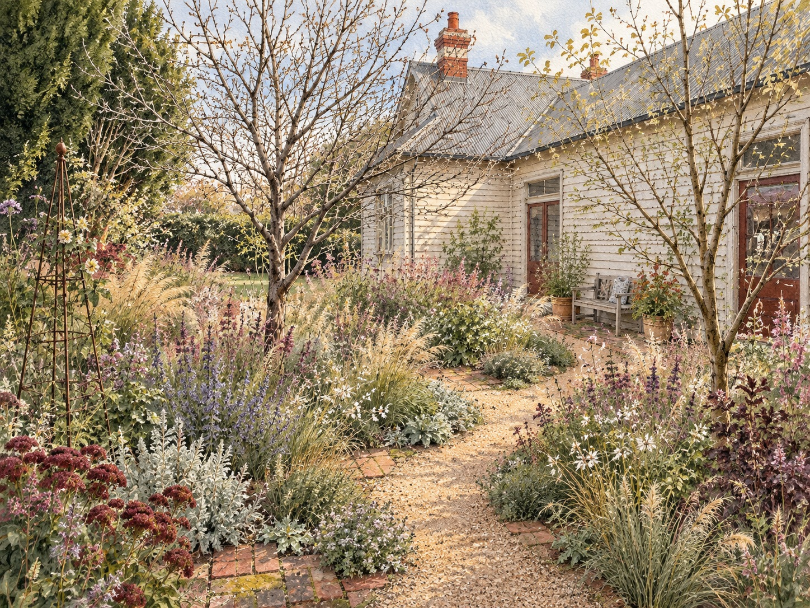
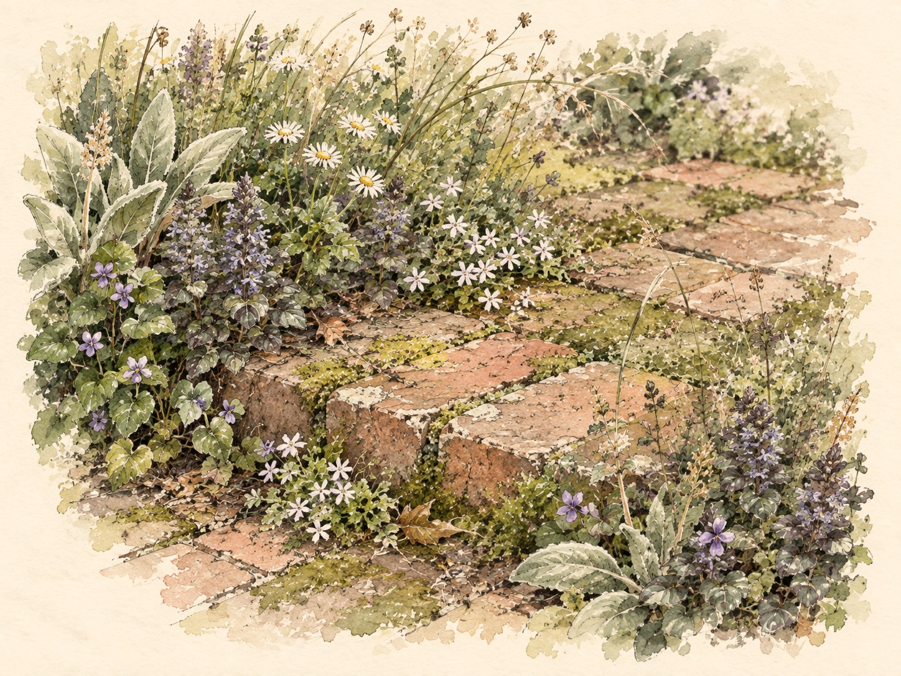
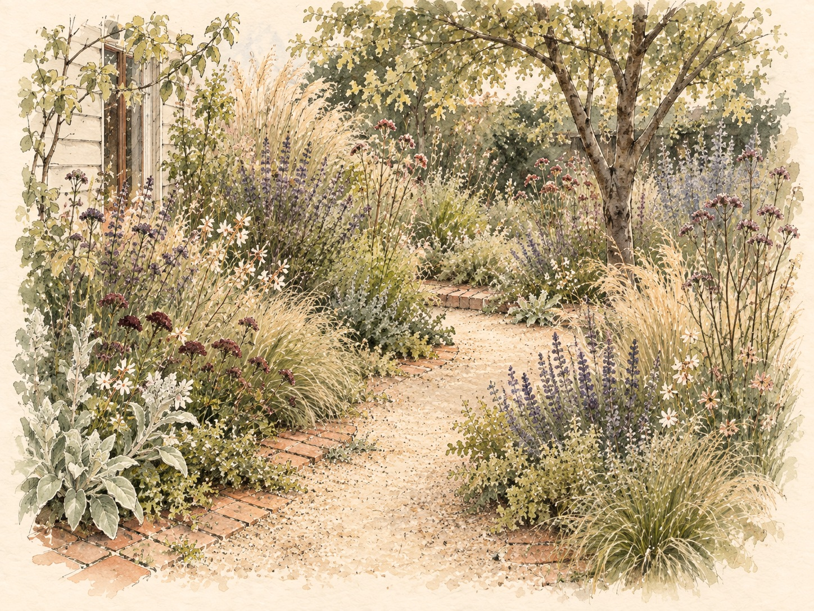
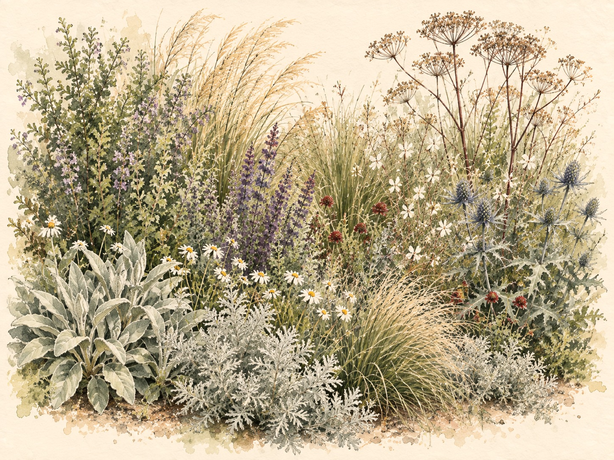
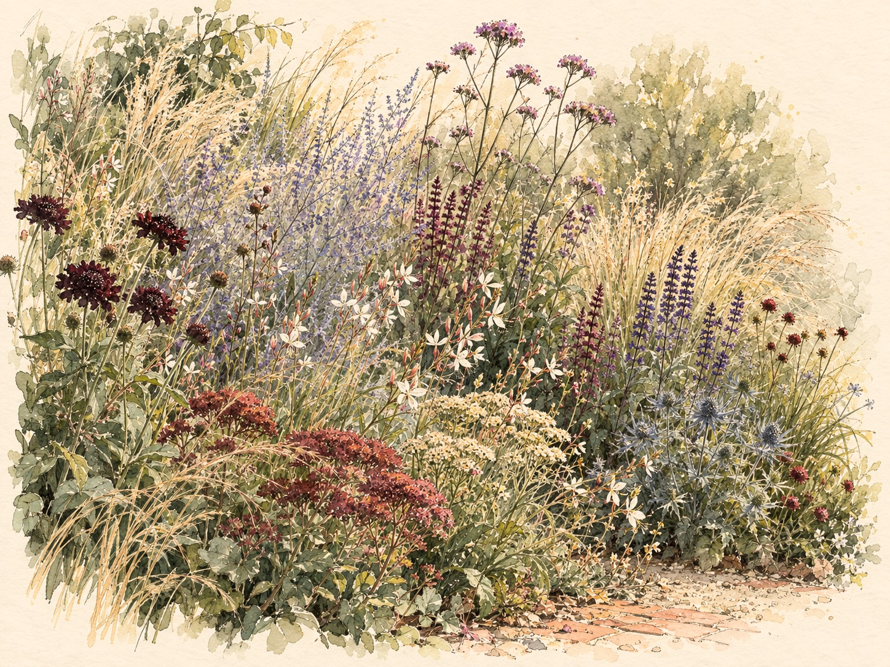
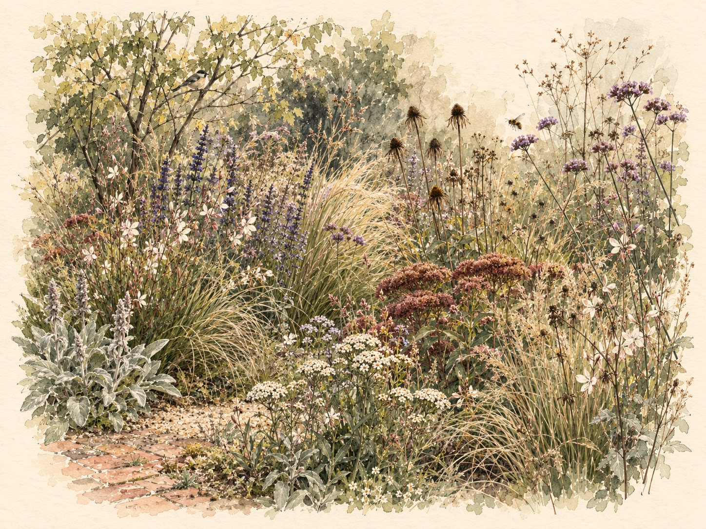
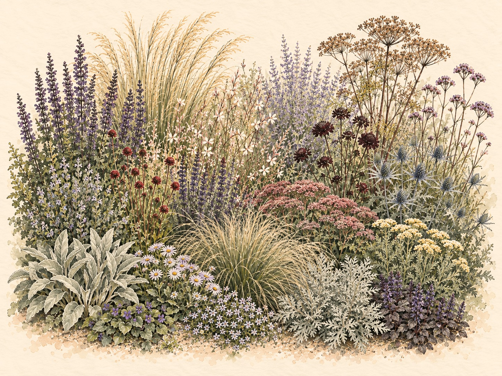

At Gardener & Son, we acknowledge the Wurundjeri Woi Wurrung people of the Kulin Nation, the Traditional Custodians of the land on which we live and work. We honour their enduring connection to Country — and the grasslands, woodlands, and wetlands that once flourished here through generations of care and balance. These living systems were not lost to time, but to disconnection. Our work seeks to rekindle that relationship, restoring native ecologies and weaving biodiversity back into the urban fabric — each garden a quiet act of remembrance and renewal.
A garden that feels sown rather than arranged — grasses catching the late light, flowers rising through them in drifts, and as beautiful in its winter bones as in high summer.

The brick edging, the courtyard and the stepping pads all stay. They already have the age the planting will take years to earn.
A softly wandering crushed-granite path gives the garden one clear line of movement — informal enough to feel discovered rather than imposed, and narrow enough that the planting can lean in and soften its edges.


The grasses do the structural work — the vertical line, the movement, and the winter shape once everything else has gone over.
Four salvias carry colour for most of the year. Russian Sage and Blue Sea Holly add smoky haze and steel-blue thimbles, and Tall Verbena floats above on see-through stems.

A silver thread of Wormwood, Bush Germander, Lamb's Ear and Bronze Fennel lifts the darker flowers and scents the air when brushed.
At ground level, Native Violet and Alpine Pratia knit the shady pockets with Ajuga, while Seaside Daisy softens the edges and the brick.

Running through the meadow is a thread of plants indigenous to this place — tussock and plume grasses, chocolate lily and magenta stork's-bill — so the garden feeds the insects and birds that already belong here.

Seedheads stay through autumn and winter for structure, shelter and small birds. Everything is cut back once in late winter and returns fresh each spring.
Nothing new where something good already exists. The money goes into soil, plants and the path.
2 Churchill Street, Mont Albert · 140 Auburn Road, Hawthorn